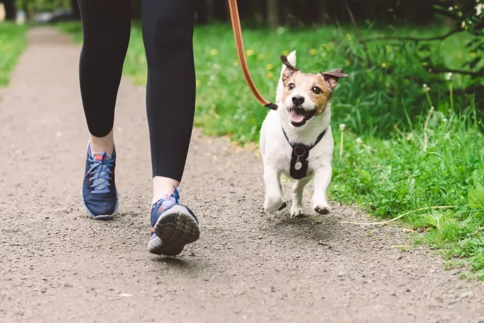
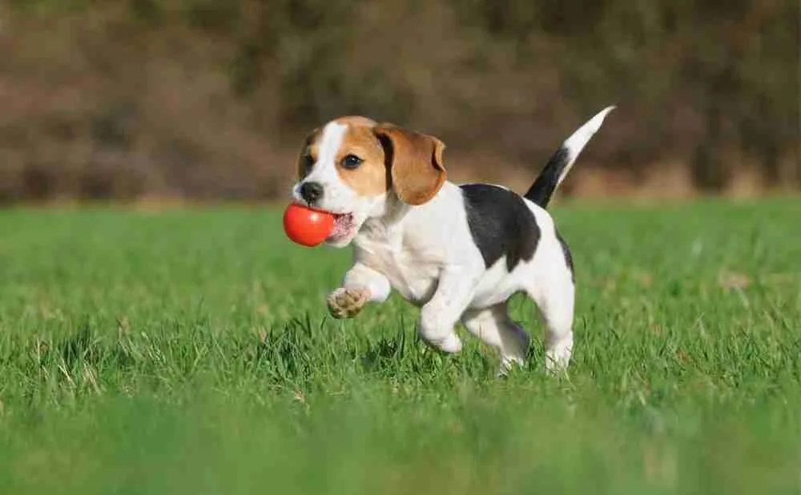
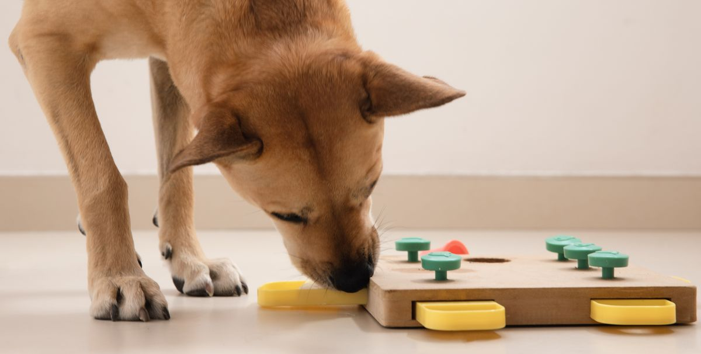
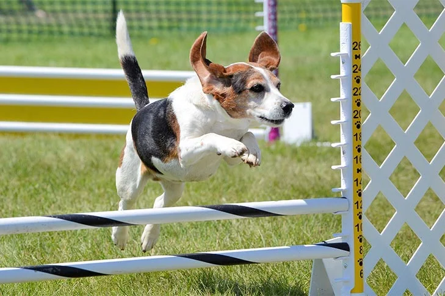
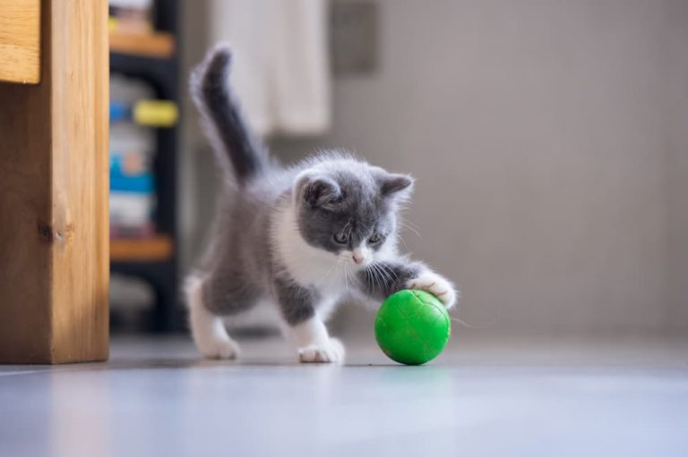
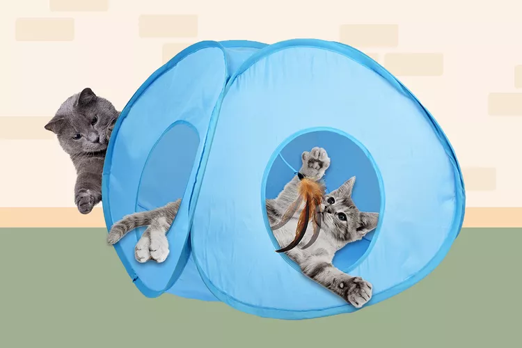
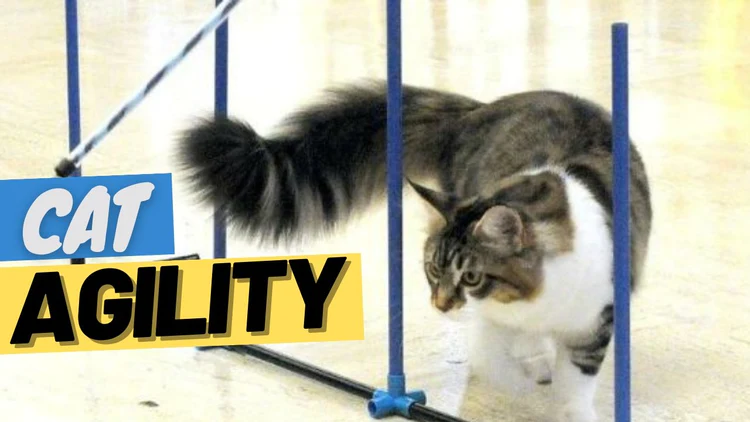

Exercise Tips:
- Consult with your veterinarian to determine the appropriate level of exercise for your pet's age and breed.
- Start with short sessions and gradually increase the duration and intensity.
- Choose activities that your pet enjoys to make exercise fun.
- Monitor your pet's behavior and adjust the exercise routine accordingly.
Exercise Activities:
For Dog
There are various ways to keep your pet active. Consider the following activities:
- Walking: Good pet owners know that owning a dog is not just about cuddles on the couch and belly rubs. Our fur babies need lots of care and attention, and most of all they need physical exercise and mental stimulation on a daily basis. Dogs should be taken out for a walk at least once a day, in order to keep their body and mind healthy. They probably won't let you sleep past 9 in the morning without alerting you that it's time to go out anyway! Walking your dog is good for you too, as it keeps you in shape and helps you strengthen your bond with your pup. But while it's common knowledge to walk your dog every day, do you know how long their walk should be? According to veterinarians that changes based on your dog's breed and size, you can read their advice below. 
- Playing Fetch: Playing fetch with your dog is a great way to exercise your dog but also to have fun and develop a bond with your canine companion. Most dogs are not born with the knowledge to play fetch, but it is not difficult to teach your furry friend how it works. Fetch is essentially a game of throwing a ball or toy, having your dog chase it and return it back to you. 
- Interactive Toys:help fight boredom when you have to leave your dog at home, and provide comfort when they're feeling nervous. Toys can even help prevent your dog from developing certain problem behaviors. 
- Agility Training:Dog agility is a fast-paced, timed obstacle course completed by a dog and their handler. Courses usually contain around 15 or so obstacles, including tunnels, jumps, weave poles, and ramps, which the dog must complete in a predetermined pattern. 
- Great exercise: Running, jumping, climbing, and weaving, and all at a fast pace, is bound to tire your dog out. Agility is particularly great for high-energy dogs who need a lot of exercise.
- Reduces boredom: In addition to providing a physical workout, agility provides mental stimulation for your dog, which reduces boredom and the destructive behaviors that can come with it.
- Reinforces good behavior: Dogs rely on their owner to provide the commands they need to complete the agility course correctly. Teaching agility increases the level of attention your dog pays to you, and reinforces compliance to obedience commands.
- Strengthens the bond between owner and dog: Many agility handlers comment on the increased bond they feel with their dog as a result of training as a team.
How Long Are You Supposed to Walk Your Dog?
Taking your dog on daily walks keeps them healthy in many different ways. It decreases stress, strengthens their bones and muscles, and helps against cardiovascular disease too. But while you strive to keep your dog healthy, one mistake you want to avoid is taking it on walks that are too long and will make your pet excessively tired. Dr. Kelly Diehl, a small animal internal medicine specialist and senior director of science and communication at the Morris Animal Foundation, told Newsweek that the length of your dog's walk depends on its age, breed as well as on the environmental conditions. "Is it really hot or cold outside? Is it rainy? Or snowing? Or sleeting? All these factors need to be considered," she said.
Small Breeds
Small-breed dogs boast less resistance than big dogs, so their walk should be proportioned to their body size and strength. Dr. Grant Little, veterinarian expert for the question-and-answer platform JustAnswer, told Newsweek that what a Labrador retriever may consider a light jog may turn out to be felt as a full run for a smaller-sized dog like a Chihuahua. "A small dog may get more tired quickly on a long walk as they are having to keep up with the owner and run faster," he said. Little suggested considering about 20 minutes of exercise at a time for small-sized dogs—those under 15 pounds. Dog owners should always contact their local veterinarian whenever they see that walks start becoming a problem, he added.
Large Breeds
For larger breeds, Little suggested a 30-to-60-minute walk at a time, adding that more athletic breeds, like Labrador retrievers and Australian shepherds, can often go for long one-hour walks and feel little to no pain. "Work on training early on, and be able and ready to identify if your dog is no longer able to keep up or they seem to be having pain/mobility issues," he said.
HOW TO TEACH YOUR DOG TO PLAY FETCH
Start with sit
This is an important step to introduce your dog to the ball and get them excited about the game. The game always begins by asking your dog to sit. This will also ensure your dog won’t jump on you to get the ball before you throw it.
Get them to chase and pick up the ball/toy
You should initially throw the ball a short distance and gradually throw it longer distances over time as your dog learns the game. Say the word ‘fetch’ when you throw the ball, your dog then should chase it and pick it up. If your dog does not chase it then try again and get them to take interest in the ball.
Call the dog back
This is a key element of the game where your dog brings the ball back to you. Ensure that your dog has a good understanding of the come command and say it as soon as they pick up the ball. Give them lots of praise when they come back to you such as patting and verbal praise.
Teach them to drop the ball/toy
The final step of the fetch game is to get them to drop the ball. This is where the release command or drop it command is useful. When your dog releases the ball, you should throw it again to reward them. It is always much safer to use a small ball or dog toy when you play fetch and avoid using sticks that can often cause injuries to your dog. If you are struggling to teach the fetch game to your dog, try incorporating dog treats, particularly if your dog is unwilling to release the ball in the last step.
Some Interactive Dog Toys You'll Be So Glad You Bought For Your Dog
Benefits of teaching your dog agility
For Cat
There are various ways to keep your pet active. Consider the following activities:
- Playing Fetch: Use a ball or favorite toy for a game of fetch in a safe, open area. 
- Your cat’s favorite toys
- Your feline’s favorite treats
- Interactive Toys: Provide toys that dispense treats or engage your pet's mind. 
- Agility Training: Cat agility training was a very popular activity for feline enthusiasts who wanted to engage their pets mentally and physically. The trend has slowed down but it's still a great way to strengthen the bond with your cat and burn their energy. In this comprehensive guide, we will explore the benefits, techniques, and tools to help you master the art of cat agility training. 
- Physical Exercise: Agility training provides cats with a fantastic form of physical exercise, reducing the risk of obesity and associated health issues such as diabetes and heart disease.
- Mental Stimulation: Cats are intelligent creatures that thrive on mental challenges. Cat agility training helps to keep their minds sharp and prevent boredom-related issues.
- Improved Confidence and Socialization: Agility training helps cats build confidence and social skills, especially in shy or fearful felines.
- Bond Strengthening: Working closely with your cat during agility training strengthens the bond between you and your feline companion.
- Improved Behavior: Cats that engage in regular agility training are less likely to exhibit destructive behaviors, as they have an outlet for their energy and curiosity.
How to Teach a Cat to Fetch
Your cat has a basket filled with toys and loves daily playtime. She chases her laser pointer, lunges after dangling feathers, and pounces on stuffed mice. So why not teach her how to fetch a ball? Fetch is most commonly associated with dogs, but your favorite feline can learn to play, too. “Some cats seem to have a natural tendency to fetch items for their owners,” says Dr. Pamela Perry, a veterinarian and behavior specialist at Cornell Feline Health Center.
Do Cats Play Fetch?
Some cats will play fetch, but others won’t. No two cats are alike. Just like some cats will walk on a leash but others will hiss at the idea of a harness, some cats will happily fetch balls while others will ignore all attempts to learn the game. “Some cats seem to have a natural inclination for playing fetch, whereas others appear uninterested in retrieving objects,” says Perry.
Playing Fetch with a Cat: What You’ll Need
The list of what you’ll need for playing fetch with a cat is pretty simple:
A ball seems like the most obvious choice for a game of fetch, but when you are playing fetch with cats, it’s important to let them decide which object is most appealing. “For any training, it is important to use a reward that motivates your cat,” says Perry. Perry suggests looking for objects that are easy for your cat to pick up in their mouth and carry, such as balls, stuffed mice, and squeak toys. (Perry even had a cat who loved chasing corks, and would happily bound across the room after them.) You’ll also want to have your cat’s favorite treats on hand so you can dole out rewards during training. “When she performs the desired behavior, immediately reward her with her favorite treat,” Perry says.